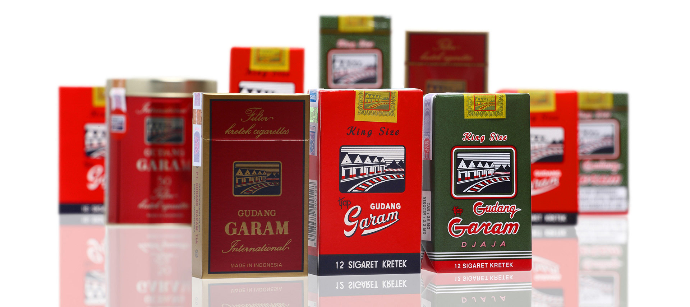
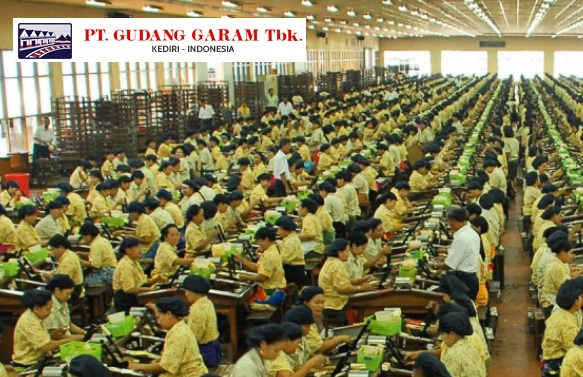
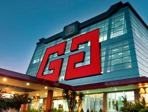
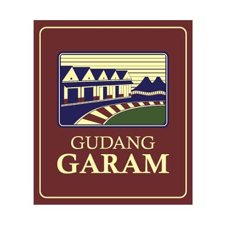
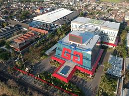
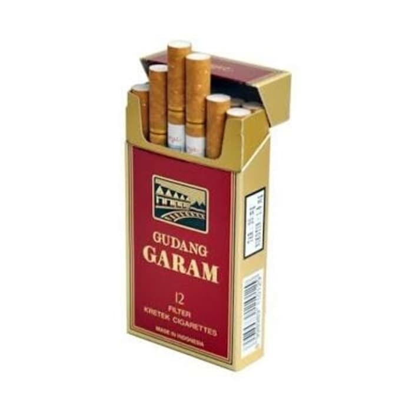
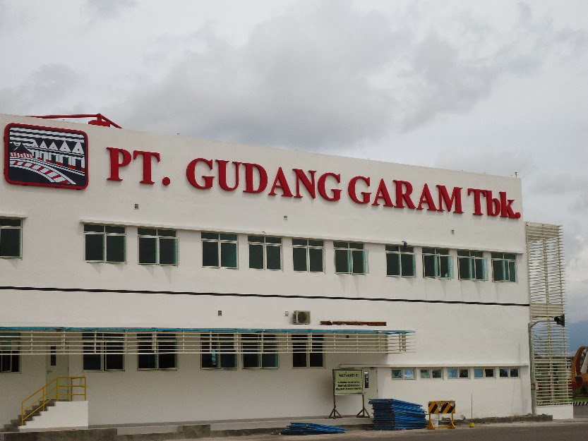
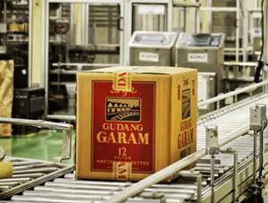

<!doctype html>
<html lang="en">
  <head>
    <!-- Required meta tags -->
    <meta charset="utf-8">
    <meta name="viewport" content="width=device-width, initial-scale=1, shrink-to-fit=no">

    <!-- Bootstrap CSS -->
    <link rel="stylesheet" href="https://stackpath.bootstrapcdn.com/bootstrap/4.3.1/css/bootstrap.min.css" integrity="sha384-ggOyR0iXCbMQv3Xipma34MD+dH/1fQ784/j6cY/iJTQUOhcWr7x9JvoRxT2MZw1T" crossorigin="anonymous">

    <title>Gudang Garam Profile</title>
  </head>
</html>
<!-- Image and text -->
<nav class="navbar navbar-light bg-dark">
  <a class="navbar-brand" href="#">
    
  </a>
	<form class="form-inline my-2 my-lg-0">
      <input class="form-control mr-sm-2" type="search" placeholder="Search" aria-label="Search">
      <button class="btn btn-outline-primary my-2 my-sm-0" type="submit">Search</button>
    </form>
</nav>
<ul class="nav justify-content-center">
  <li class="nav-item">
    <a class="nav-link active" href="#">Tentang Kami</a>
  </li>
  <li class="nav-item">
    <a class="nav-link" href="#">Brand</a>
  </li>
  <li class="nav-item">
    <a class="nav-link" href="#">Kretek</a>
  </li>
  <li class="nav-item">
    <a class="nav-link" href="#">Csr</a>
  </li>
  <li class="nav-item">
    <a class="nav-link" href="#">Media</a>
  </li>
  <li class="nav-item">
    <a class="nav-link" href="#">Gallery</a>
  </li>
  <li class="nav-item">
    <a class="nav-link" href="#">Karir</a>
  </li>
  <li class="nav-item">
    <a class="nav-link" href="#">Contact</a>
  </li>
</ul>
<div class="container mt-2">

</div>
<div class="container mt-5">
	        <div class="col-md-12 text-center">
						<h1>Tentang Kami</h1>
    <h5 class="text-center mt-0">Gudang Garam</h5>
    	        	<p class="desc">Perusahaan rokok Gudang Garam adalah salah satu industri rokok terkemuka di tanah air yang telah berdiri sejak tahun 1958 di kota Kediri, Jawa Timur. Hingga kini, Gudang Garam sudah terkenal luas baik di dalam negeri maupun mancanegara sebagai penghasil rokok kretek berkualitas tinggi. Produk Gudang Garam bisa ditemukan dalam berbagai variasi, mulai sigaret kretek klobot (SKL), sigaret kretek linting-tangan (SKT), hingga sigaret kretek linting-mesin (SKM). Bagi Anda para penikmat kretek sejati, komitmen kami adalah memberikan pengalaman tak tergantikan dalam menikmati kretek yang terbuat dari bahan pilihan berkualitas tinggi.</p>
</div>
	<div class="container mt-5"></div>
	<div class="media">
  
  <div class="media-body">
    <h1 class="mt-0">Brand Kami</h1>
    Dengan pengalaman panjang dan didukung kemampuan profesional serta teknologi tinggi, Gudang Garam selalu berupaya menghadirkan merek-merek berkualitas tinggi yang dapat memenuhi harapan dan kepuasan konsumennya. Baik merek yang sudah mengakar kuat di masyarakat maupun merek-merek yang baru atau akan dilahirkan, seluruhnya memiliki positioning dan karakteristik yang berbeda antara satu dengan yang lainnya. Keunikan spesifikasi ini diharapkan mampu memenuhi harapan serta kebutuhan setiap penikmat kretek yang berbeda-beda.
  </div>
</div>
	<div class="container mt-5">
 <h1 class="text-center">Kretek</h1>
<h3 class="text-center mt-0">Tentang Tembakau dan Cengkeh</h3>
<h4 class="text-left mt-3">Tembakau</h4>
  <div class="row">
    <div class="col-sm">
  Penduduk Indonesia mulai mengenal tembakau pada abad ke-17 melalui bangsa Eropa. Saat ini, Indonesia terkenal sebagai salah satu negara penghasil tembakau kualitas terbaik di dunia. Ada lebih dari 100 varietas tembakau yang tumbuh di Indonesia, di atas lebih dari 250 ribu hektar lahan yang mayoritas berlokasi Sumatera, Jawa, Bali, dan Lombok.
    </div>
   
	      <div class="col-sm mt-5">
	  <h5 class="text-left mt-3">Cengkeh</h5>
 Seperti tembakau, tanaman cengkeh juga tumbuh subur di Indonesia. Bagian dari tanaman cengkeh yang biasa digunakan adalah bagian bunga yang belum mekar. Meski dimanfaatkan untuk berbagai keperluan oleh banyak bangsa di seluruh dunia—mulai dari India sampai Eropa, dulu pohon cengkeh hanya tumbuh di “pulau rempah” Maluku.
    </div>
  </div>
	</div>
<div class="container mt-5">
<div class="media">
  <div class="media-body">
    <h1 class="mt-0 mb-1">CSR</h1>
Gudang Garam tumbuh berdasarkan falsafah pendiri perusahaan yang kemudian dikembangkan menjadi dasar tata kelola perusahaan yang baik. Nilai-nilai tersebut seterusnya dijadikan panduan untuk senantiasa memenuhi tanggung jawab kepada karyawan dan masyarakat sekitar. Kami memiliki komitmen untuk menunaikan tanggung jawab sosial serta terus berkontribusi pada pembangunan masyarakat. Bagi kami, perwujudan tanggung jawab sosial pada masyarakat merupakan sebuah investasi bagi masa depan sekaligus kesempatan untuk memastikan agar perusahaan dan masyarakat dapat tumbuh bersama dan saling mendukung.
  </div>
  
</div>
	</div>
<div class="container mt-5" id="produk">
  <h1 class="text-center">Gallery</h1>
  <br>
  <div class="card-deck">
     <div class="card">
  
</div>
    <div class="card">
  
    </div>
    <div class="card">
  
    </div>
    <div class="card">
  
    </div>
</div>
	<div class="card-deck mt-2">
     <div class="card">
  
</div>
    <div class="card">
  
    </div>
    <div class="card">
  
    </div>
    <div class="card">
  
    </div>
</div>
<div class="container mt-5">
	
 <h1 class="text-center">Contact</h1>
<div style="background: linear-gradient(to right,#000046, #1cb5e0)">
  <div class="container" >
    <div class="container text-black">

<div class="row">
    <div class="col-3">
<div class="card bg-light mt-5" style="max-width: 18rem;">
  <div class="card-header">Kontak Kami</div>
  <div class="card-body">
    <h5 class="card-title">Jl. Jenderal A. Yani 79 Jakarta 10510, Indonesia</h5>
    <p class="card-text">
Tel : (+6221) 2955.7000
Fax : (+6221) 2955.7009</p>
  </div>
</div>
		</div>
	<div class="col-8 mt-2">
			<form>
  <div class="form-group  text-center">
    <label for="formGroupExampleInput">Nama</label>
    <input type="text" class="form-control" id="formGroupExampleInput" placeholder="Example input">
  </div>
  <div class="form-group  text-center">
    <label for="formGroupExampleInput2">Email</label>
    <input type="text" class="form-control" id="formGroupExampleInput2" placeholder="Another input">
  </div>
  <div class="form-group  text-center">
    <label for="formGroupExampleInput2">Pesan</label>
    <textarea class="form-control" id="formGroupExampleInput2" placeholder="Pesan"></textarea>
  </div>
<button type="button" class="btn btn-outline-primary">Primary</button>
</form>
		</div>

    </div>
  </div>
  <footer class="mt-4" style="text-align: center; background-color:black; color: white"><font >PT. Gudang Garam Tbk. by Afrina Suria</font><br>
    <font size="2pt">E-mail : afrinasuria27@gmail.com</font></footer>
</div>